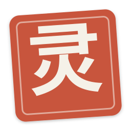
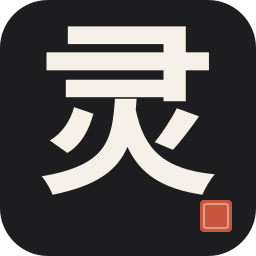
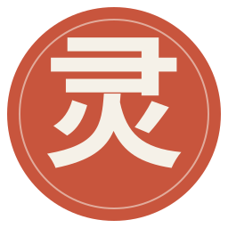

极简东方 / 墨黑 · 宣纸米 · 朱砂红
朱砂红方形印章 + 白色宋体「灵」字,微旋 4°。跟登录页 v1.0 印章一脉相承, 品牌一致性最强。但小尺寸下宋体多笔画会糊。

16墨黑圆角方块 + 白色宋体「灵」字 + 右下角朱砂红方点(落款)。 三色对比强烈,任意尺寸都不糊;朱砂方点形状跟印章呼应又更现代。 最适合做 app icon。

16朱砂红圆形 + 内圈淡米白细线 + 反白宋体「灵」字。圆形破开常规方形 icon 视觉惯性,色彩冲击强烈;但 Win 任务栏多数 icon 是方形,圆形可能略孤立。

16三个方案里,B 在「品牌识别度 × 任意尺寸清晰度 × 跟现有 UI 一致性」三轴均衡最好。
朱砂落款方点跟登录页 v1.0 印章 / 注册页「新」印章 / 设置页朱砂红余额是同一套视觉符号,只是缩到 angular pin 的尺度。
选定 B 后,我会用 ImageMagick 转成 16/24/32/48/64/128/256 七尺寸的 .ico 文件,放到 build/icon.ico,然后 package.json 加 win.icon 配置,重打装包就有完整应用图标。